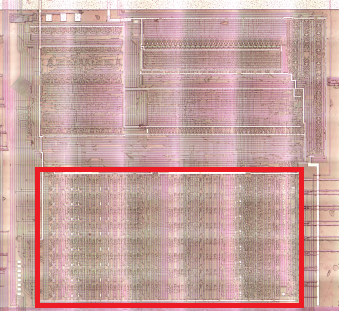
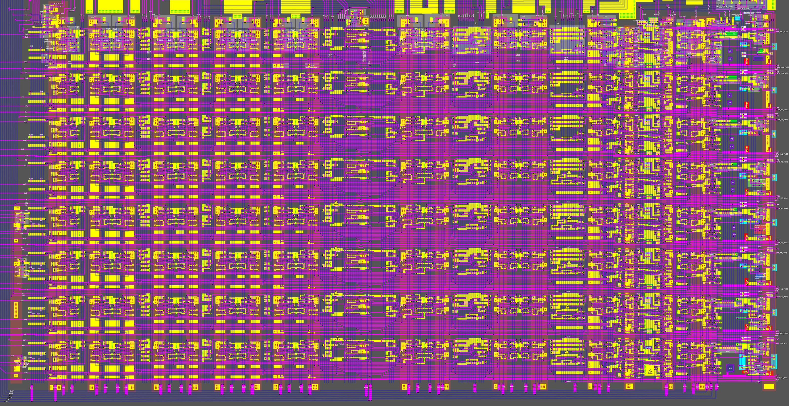
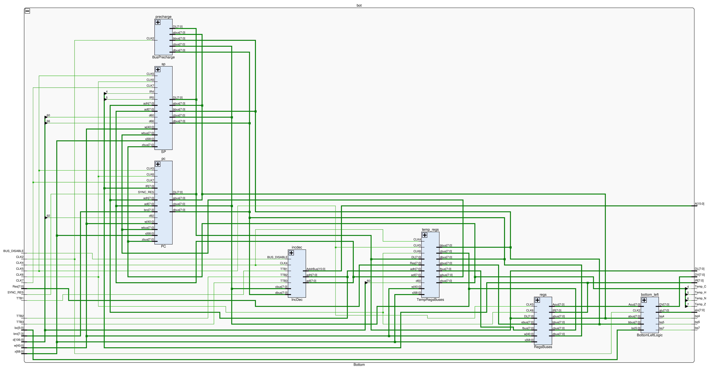
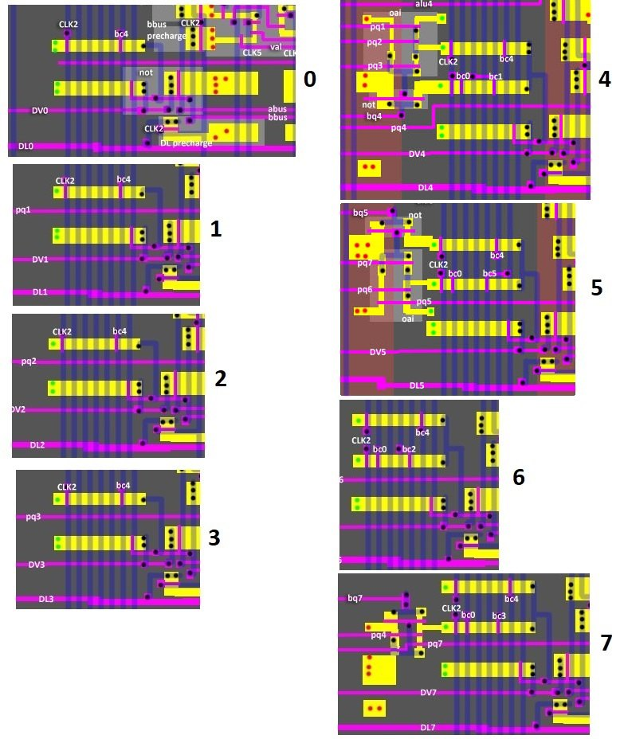
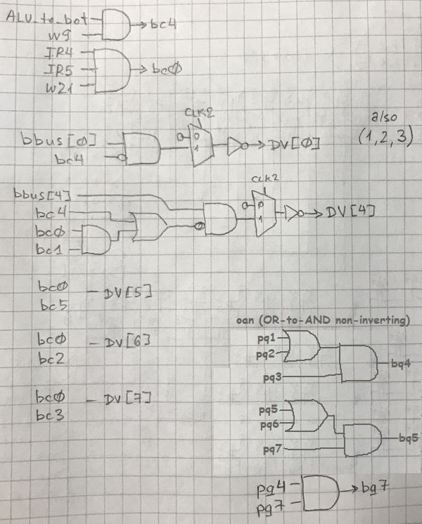

Bottom

The SM83 processor uses a typical layout from the 70-80's: the "brain" is on top and the registers and ALUs are on the bottom.
The upper part outputs to the lower part a large number of control signals for connecting registers to buses, ALU operations, etc.
For the SM83 the layout is slightly different: the ALU is on the top-left and at the bottom purely registers and auxiliary logic for switching buses.
Design


The bottom part consists of 8 lanes, according to the number of registers bits. The numbering of the bits is from 0 from top to bottom.
There are minor differences between the lanes, such places are marked with a ⚠️ sign.
The components of the bottom are divided into subsections to make it easier to understand:
Bottom Inputs
| Signal | From | Description |
|---|---|---|
| CLK2 | External | |
| CLK3 | External | |
| CLK4 | External | |
| CLK5 | External | |
| CLK6 | External | |
| CLK7 | External | |
| DL | DataLatch | Internal databus |
| [5:0] bc | ALU | |
| Res | ALU | ALU Result |
| d | Decoder1 | Decoder1 output |
| w | Decoder2 | Decoder2 output |
| x | Decoder3 | Decoder3 output |
| SYNC_RES | External | |
| TTB1 | Thingy | 1: Perform pairwise increment/decrement (simultaneously for two 8-bit IncDec halves) |
| TTB2 | Thingy | 1: Perform decrement |
| TTB3 | Thingy | 1: Perform increment |
| Maybe1 | External | 1: Bus disable |
| Thingy_to_bot | Thingy | Load a value into the IE register from the DL bus |
| SeqOut_1 | Sequencer | See nso signal in IRQ Logic |
| CPU_IRQ_TRIG | External | |
| RD | Sequencer |
Bottom Outputs
| Signal | To | Description |
|---|---|---|
| DV | ALU | ALU Operand2 |
| bq4 | ALU | |
| bq5 | ALU | |
| bq7 | ALU | |
| Temp_C | ALU | Flag C from temp Z register (zbus[4]) |
| Temp_H | ALU | Flag H from temp Z register (zbus[5]) |
| Temp_N | ALU | Flag N from temp Z register (zbus[6]) |
| Temp_Z | ALU, Thingy | Flag Z from temp Z register (zbus[7]) |
| alu | ALU | ALU Operand1 |
| IR | Many | Current opcode |
| bot_to_Thingy | Thingy | IE access detected (Address = 0xffff) |
| SeqControl_1 | Sequencer | |
| SeqControl_2 | Sequencer | |
| A | External | External core address bus |
| CPU_IRQ_ACK | External |
Bottom Left (ALU bc/bq) Logic
The circuit is on the left side in a spread out layout. The picture shows the parts of the circuit for the individual parts.
It is very difficult to put this circuit into any category. It belongs to both ALU and registers at the same time, and is generally at the bottom. So it's going to stay here untouched for now.


From #131:
your bq7 is the same as my a_reg_hilo_gte_8, which means "are both nibbles greater than or equal to 8"
your bq5 is the same as my a_reg_hi_gt_9, which means "is the upper nibble greater than 9"
your bq4 is the same as my a_reg_lo_gt_9, which means "is the lower nibble greater than 9"
those are used by the ALU to generate an "adjustment operand" that gets added to A during DAA